In working through my prototype process, I realised the value of detachment. During testing, users often interpreted my design differently than I initially intended. This taught me an important lesson: sometimes, stepping back and allowing space for diverse interpretations can reveal strengths or weaknesses I hadn’t considered. It’s a reminder not to be overly literal in my approach—focusing too much on perfecting surface details like the "bark and leaves" can distract from the core ideas.
Instead, I aim to keep the structure loose and flexible, allowing room for user interaction to shape the outcome. By thinking more about pseudocode and core functionality, I can focus on the essence of the design without getting bogged down by unnecessary details too early in the process. This balance between precision and openness is something I will carry forward into my major projects.

00 Embrace Detachment
764-39/24
Doc-45456
Doc-45456

01 rethinking "happy"
764-39/24
Doc-45456
Doc-45456
I began by brainstorming in Illustrator for the "happy" and "sorrow" pages. When Andy suggested that "happy doesn’t have to be pink," it made me pause and rethink my approach. This reflection deepened my understanding of how important it is to challenge default ideas and truly think about the emotions I aim to convey, rather than settling for familiar design choices. It pushed me to go beyond surface-level associations and question what "happy" really means in my design context.
 nostos main page ideas.
nostos main page ideas.

 sorrow page ideas.
sorrow page ideas.
 happy page ideas.
happy page ideas.
Read more

02 learning through experimentation
764-39/24
Doc-45456
Doc-45456
I approached technical development with p5js, HTML, and CSS by actively breaking down others' sketches and studying the techniques they used. This process helped me understand not just the final outcomes but also the methods behind them. Through trial and error, I honed my skills, learning how small changes in code or design could dramatically shift the user experience. Referring to multiple resources, I realised how valuable it is to dissect existing examples—an exercise that provided insight into how others solve similar design challenges. This method of learning deepened my technical understanding and inspired new ways to approach my own work.
default happy page.
happy jumping diagonally.
happy jumping up side down.
happy in circular motion, with fonts and colour.
happy release like a balloon.
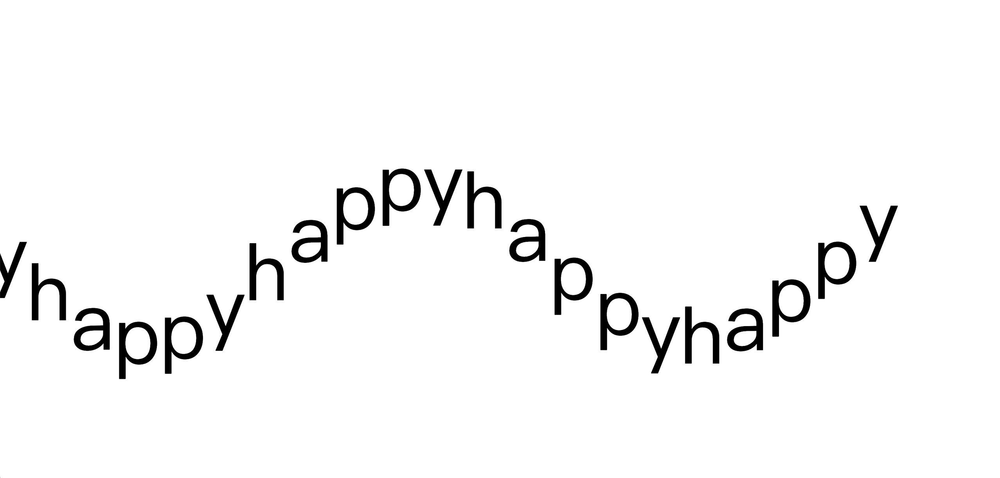
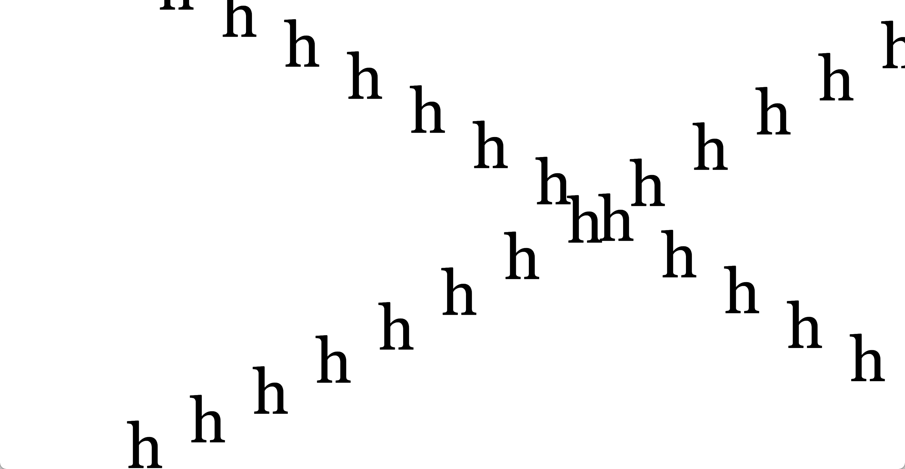
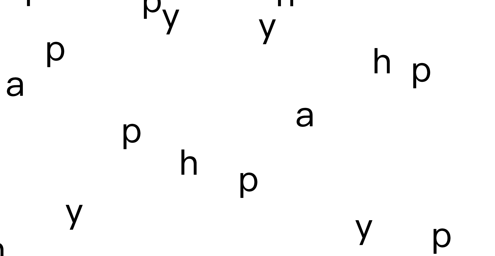
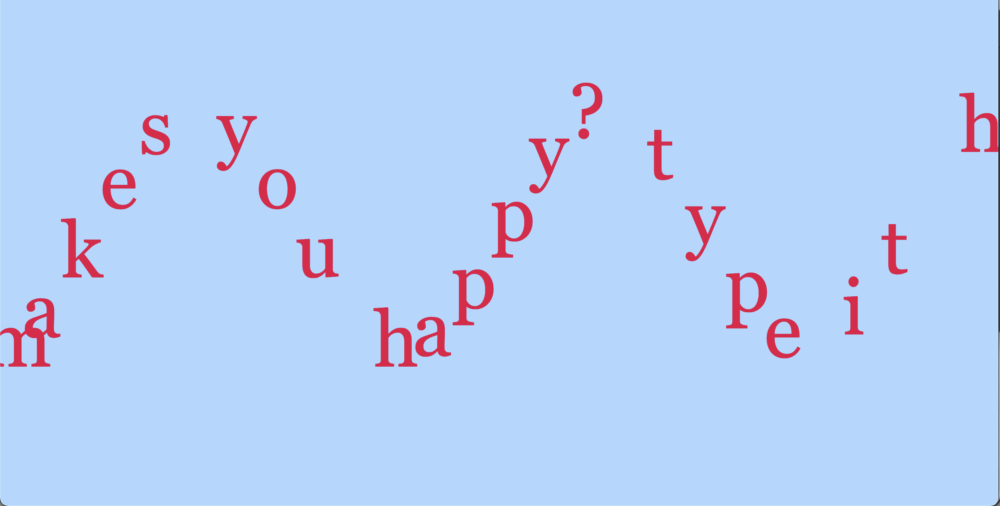
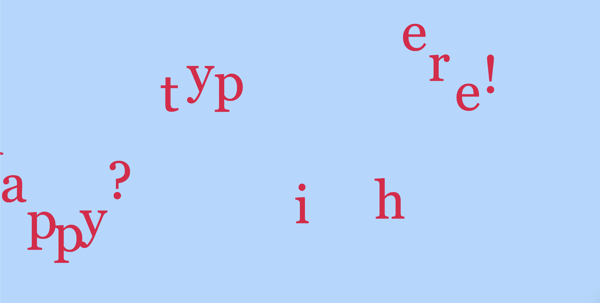
Read more

03 troubleshooting randomisation
764-39/24
Doc-45456
Doc-45456
While working on the main page for Nostos, I faced challenges in troubleshooting the poem's randomisation and implementing the drag-and-drop function. This technical hurdle proved invaluable to my learning process, sharpening my problem-solving skills and deepening my understanding of how randomness can enhance unpredictability and interaction, ultimately making the user experience more engaging. Additionally, I recognised the importance of considering various scenarios during user interactions to ensure that the functionality works under all conditions.
nostos 1.0.
nostos 1.2.start randomisation
nostos 1.3.set margins and center the poem.
nostos 1.5.insert blank, ensure drag and drop function work.
nostos 1.6.debug ("sorrow" when dragging, some letters from the poem are also moved.) sorrow and happy float in colour.ensure different sequence of dropping the word will link to the right page.
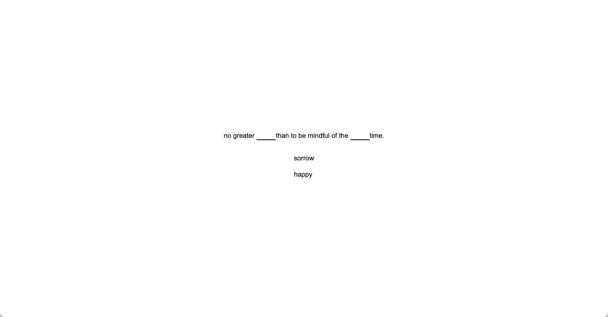
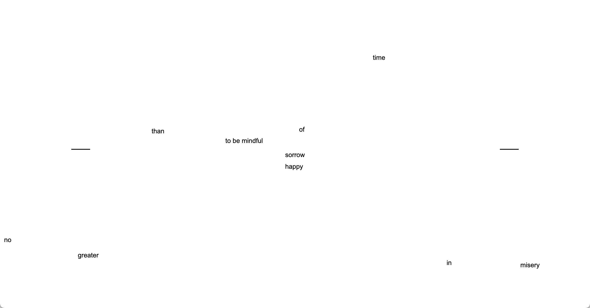
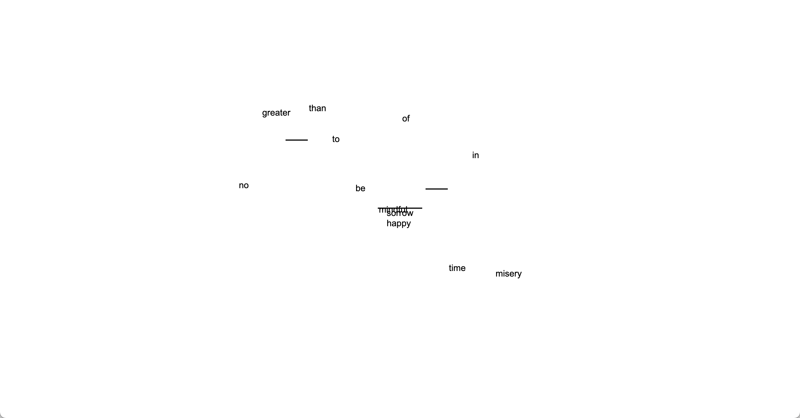
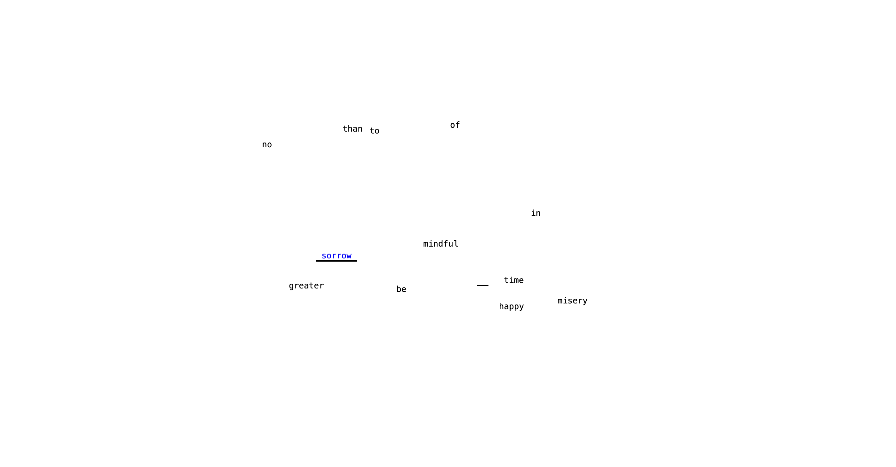
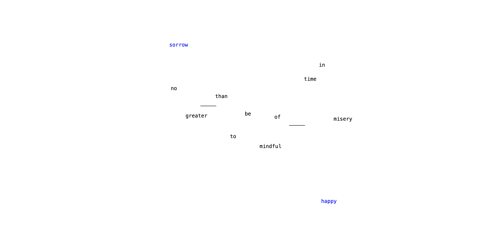
Read more

04 exploring the depth of "sorrow"
764-39/24
Doc-45456
Doc-45456
Hitting a point of stagnation made me realise the importance of exploring "sorrow" beyond its default particle form. I began to think of it as something more layered and concrete, which pushed the project in a new direction.
default.
change font to serif to suggest more emotions.
play with scale and opacity.
play with colour.(for fun, rainbow would probably be the last colour to represent sorrow.)
mix two colours, blue and cyan.
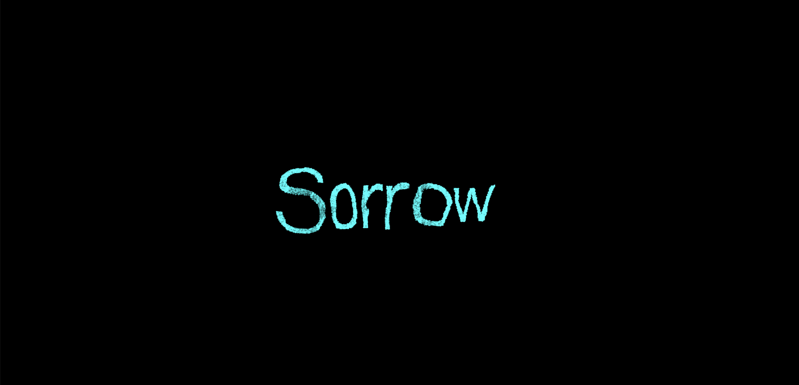
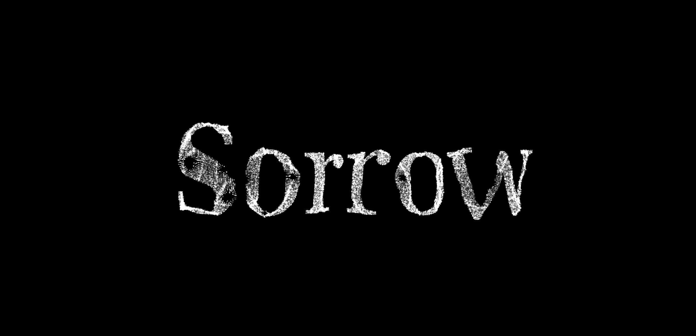
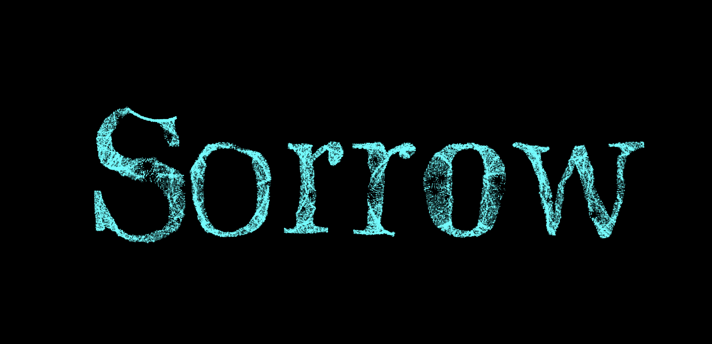
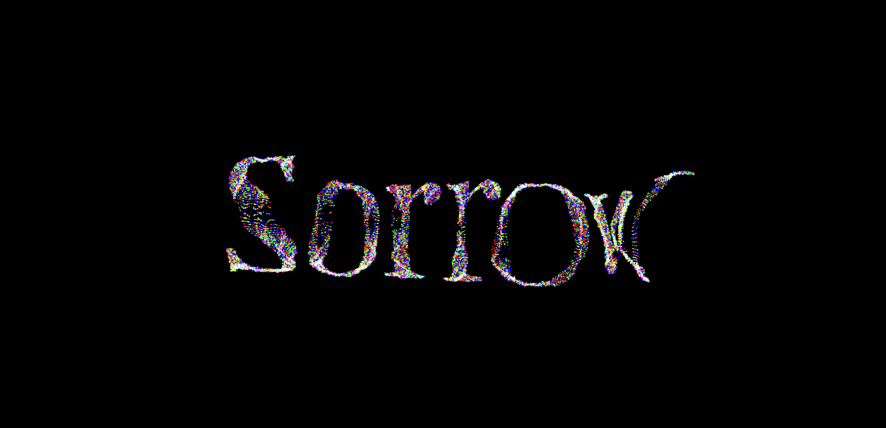
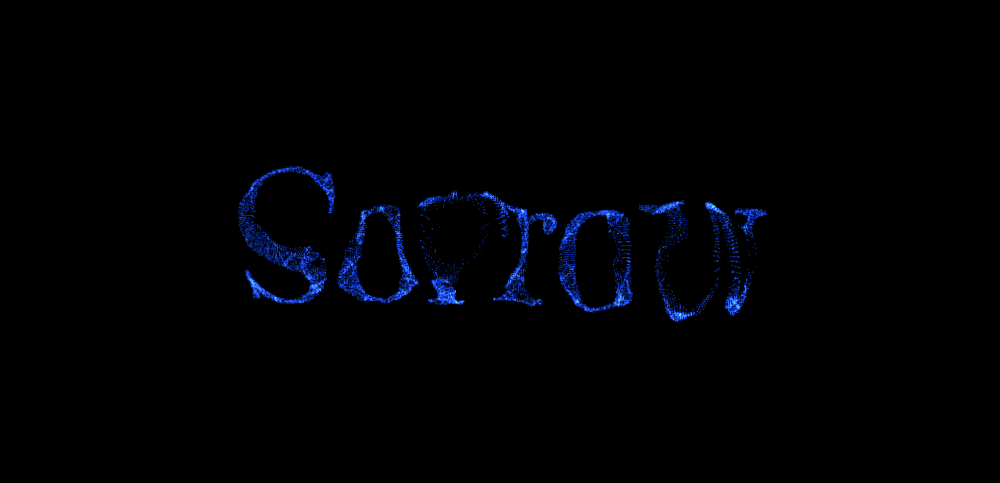
Read more

05 Incorporating Sound for Depth
764-39/24
Doc-45456
Doc-45456
After attending a sound tutorial, I realised that sound could introduce a new dimension to my work, enhancing the communication of my concepts and creating a more immersive experience. I experimented with various sounds and, after receiving feedback from a friend that the "balloon" sound on my page didn’t quite resemble a balloon inflating, I updated it with a more fitting sound.
Initially, there were two background sounds for the "sorrow" page, but the large file size caused long loading times. To address this and maintain consistency with the "happy" page, I decided to keep only the ringing sound and remove the background music.
 old balloon sound.
old balloon sound.
new ballon sound.
Initially, there were two background sounds for the "sorrow" page, but the large file size caused long loading times. To address this and maintain consistency with the "happy" page, I decided to keep only the ringing sound and remove the background music.
old balloon sound.
new ballon sound.
Read more
06 less is more
764-39/24
Doc-45456
Doc-45456
One of the most important lessons I learned was the value of consistency. I realised that a cohesive project is far more impactful than one filled with scattered ideas. This insight led me to simplify and refine elements like typography and remove unnecessary pages.
While I was particularly fond of the "misery" page, where the scattered words repositioned themselves, I ultimately chose to remove it to maintain cohesion. No more function creeps, and it’s true—spending a lot of time perfecting the three main pages made me realise I would run out of time if I didn’t cut back.
misery page.
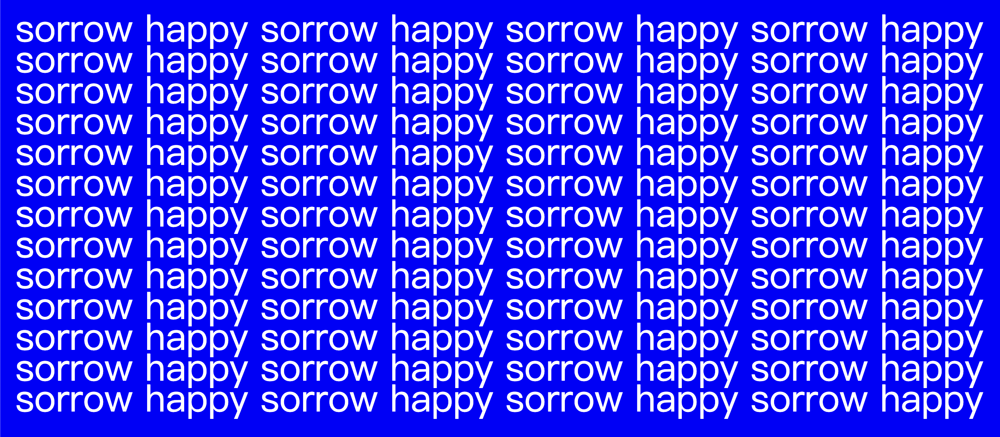
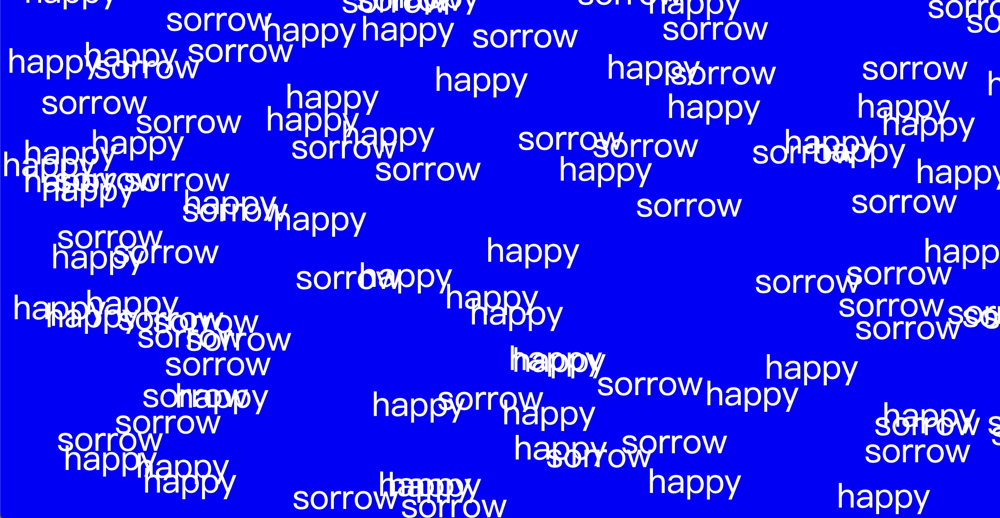
Read more
Brief 2
Review
Final Project
Misery Page
This review will present a well-composed document detailing the techinical diagram, and rationale of the artwork.
Final Project
Misery Page